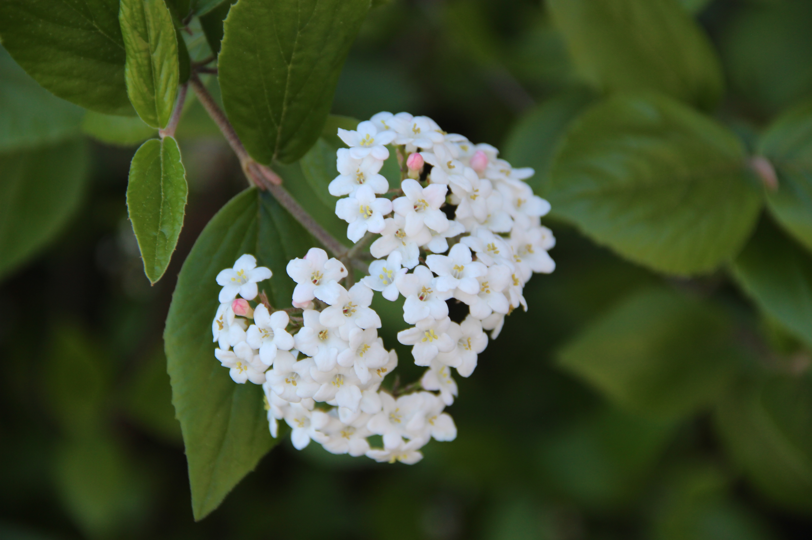
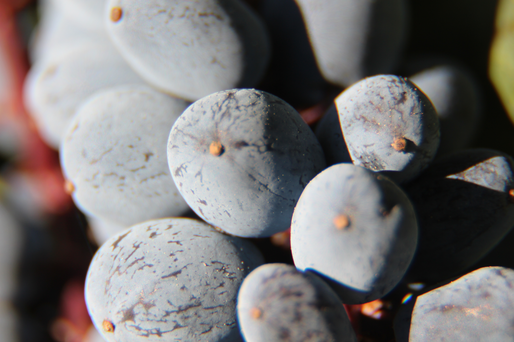
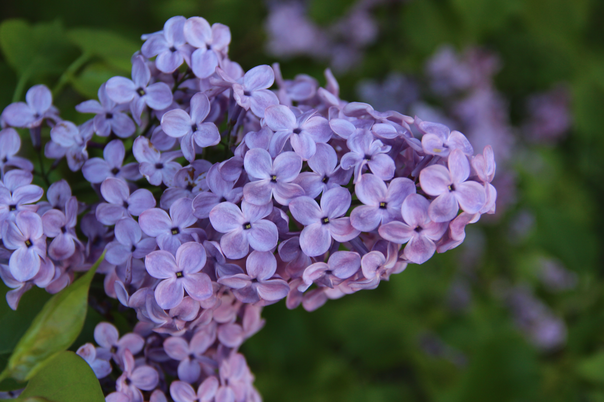

SPRING BLOOMKorean Spice Viburnum
Viburnum carlesii
Compact, multi-stemmed deciduous shrub producing dense clusters of blush-pink buds that open into highly fragrant white snowballs.
Small-batch flowering shrubs, heirloom vines, and custom residential garden curation grown for Pacific Northwest soil and seasons.

Grown outdoors without synthetic forcing for resilient root establishment.

SPRING BLOOMViburnum carlesii
Compact, multi-stemmed deciduous shrub producing dense clusters of blush-pink buds that open into highly fragrant white snowballs.

HEIRLOOM SHRUBSyringa vulgaris
Classic architectural border specimen prized for heavy lavender-violet flower panicles, pollinator attraction, and multi-decade longevity.
Vitis vinifera
Grafted cool-climate grapevine stock suited for backyard arbors, hillside trellises, and small-lot home viticulture projects.
Sample Nursery Hours: Thu–Sun, 9:00 AM – 4:00 PM • Display Line: 1-234-567-8910
Display-only concept form • Call 1-234-567-8910